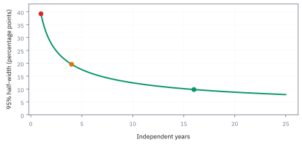

3.4 Confidence Intervals
รายงานว่าข้อมูลยังแยกค่าใดออกจากกันไม่ได้ แทนการฟันธงด้วยเลขเดียว
กองทุนมี active return เฉลี่ย 3% ต่อปีจากสี่ปี และ SD รายปี 6% ควรรายงานว่า “ทำได้ 3%” หรือควรแนบช่วงความไม่แน่นอนกว้างกว่านั้น? คำตอบต่างกันมากตามว่า 6% เป็นค่าประชากรที่ทราบ หรือเป็นค่าที่เพิ่งประมาณจากข้อมูลสี่จุดเดียวกัน
1. เปลี่ยนคำถามจากค่าจุดเดียวเป็นวิธีสร้างช่วง
ให้ $\mu$ เป็นค่าเฉลี่ย active return จริงในแบบจำลองคงที่ และ $\hat\mu=\bar X$ เป็นค่าเฉลี่ยจากข้อมูล หน่วยที่ใช้คำนวณตัวอย่างคือ จุดเปอร์เซ็นต์ต่อปี เช่น $\hat\mu=3$ และ $\sigma=6$ จึงไม่ต้องสลับ 0.03 กับ 3 ระหว่างขั้นตอน
Confidence interval (CI) คือช่วง $[L(X),U(X)]$ ที่คำนวณจากข้อมูล วิธีระดับ 95% มีเป้าหมายให้ช่วงที่สร้างจากการสุ่มซ้ำครอบค่าจริง 95% ของครั้ง ภายใต้เงื่อนไขที่ใช้สร้างช่วง สัดส่วนที่ครอบจริงเรียกว่า coverage; ถ้าเงื่อนไขผิด coverage ไม่จำเป็นต้องเท่าตัวเลขที่ติดป้าย
2. ตัวคูณ 1.96 มาจากพื้นที่ ไม่ใช่กฎจำ
ให้ $Z$ เป็น standard normal และ $\Phi$ เป็น CDF ของมัน ต้องการพื้นที่ตรงกลาง 95% จึงแบ่งส่วนที่เหลือ 5% ไปหางละ 2.5% ค่าขอบขวาต้องมีพื้นที่ทางซ้าย 97.5%
ค่า quantile คือขอบที่มีพื้นที่สะสมตามกำหนด สำหรับช่วงสองด้าน 90% ใช้ 1.645; สำหรับ 99% ใช้ 2.576 หากปัดเป็น 2 พื้นที่จริงคือ $2\Phi(2)-1\approx95.45\%$ ช่วง 99% กว้างกว่า 95% ประมาณ $2.576/1.96-1=31.4\%$ เมื่อ SE เท่ากัน ความเชื่อมั่นสูงขึ้นจึงแลกกับช่วงกว้างขึ้น
3. จัดอสมการจนได้ขอบที่คำนวณได้
ถ้าข้อมูลรายปีเป็น normal อิสระและทราบ $\sigma$ จริง ค่า $(\hat\mu-\mu)/(\sigma/\sqrt n)$ เป็น standard normal แบบ exact หากใช้ CLT กับข้อมูลไม่ normal ผลจะเป็น approximation ซึ่งต้องมีตัวอย่างมากพอสำหรับการแจกแจงนั้น
บรรทัดสุดท้ายเกิดจากย้ายข้างและกลับทิศเมื่อคูณด้วย −1 ขอบสองด้านเปลี่ยนตามข้อมูล แต่ $\mu$ คงที่ ครึ่งความกว้างจึงเท่ากับ critical value × SE และมีหน่วยเดียวกับค่าเฉลี่ย
4. ถ้าทราบ SD จริง: สี่ปีให้ช่วงกว้างเพียงใด
สมมติ normal อิสระและทราบ $\sigma=6$ จุดเปอร์เซ็นต์ สำหรับสี่ปีได้ SE = $6/\sqrt4=3$ จุดเปอร์เซ็นต์ ช่วง 95% แบบ $z$ คือ
นี่คือช่วงของ ค่าเฉลี่ย active return ไม่ใช่ช่วงของผลตอบแทนปีหน้า การครอบศูนย์บอกว่าวิธีนี้ยังไม่ปฏิเสธค่าเฉลี่ยศูนย์ ไม่ได้พิสูจน์ว่าฝีมือเป็นศูนย์ และผลตอบแทนเหนือดัชนีอาจยังสะท้อนความเสี่ยงที่ไม่ได้ปรับออก
| ปีอิสระ | SE (จุด) | ช่วง 95% แบบ z |
|---|---|---|
| 1 | 6.000 | [−8.76%, 14.76%] |
| 4 | 3.000 | [−2.88%, 8.88%] |
| 5 | 2.683 | [−2.26%, 8.26%] |
| 9 | 2.000 | [−0.92%, 6.92%] |
| 16 | 1.500 | [0.06%, 5.94%] |
ตารางตรึงค่าเฉลี่ยที่สังเกตไว้ 3% เพื่อเปรียบเทียบความแม่นเท่านั้น ไม่ได้คาดว่าค่าเฉลี่ยจะอยู่ที่ 3% ทุกครั้งที่เพิ่มปี การไม่มีข้อมูลใหม่ในตารางยังไม่ใช่แผนการทดสอบที่มี power ตามเป้าหมาย
5. แก้หาขนาดตัวอย่าง แต่แปลผลอย่างระวัง
ถ้าตรึงค่าเฉลี่ย 3 และ SD 6 ไว้ ขอบล่างเป็นบวกเมื่อ
จำนวนเต็มแรกคือ 16 ปี; หากอัตราส่วนค่าเฉลี่ยต่อ SD เป็น 0.25 จะได้ $n\gt61.4656$ หรือ 62 ปี นี่เป็นการคำนวณความกว้างโดยสมมติว่าค่าที่สังเกตไม่เปลี่ยน ไม่ใช่การรับรองว่าเมื่อครบปีนั้นช่วงจะพ้นศูนย์ และการตรวจทุกปีแล้วหยุดเมื่อพ้นศูนย์ต้องใช้วิธี sequential inference ไม่ใช่อ้าง coverage ของการตรวจครั้งเดียว
6. เมื่อ SD มาจากตัวอย่าง ต้องเผื่อความไม่แน่นอนในตัวหาร
ภายใต้ข้อมูล normal อิสระ ถ้าใช้ sample SD $s$ แทน $\sigma$ ตัวหารก็สุ่ม จึงเกิด Student $t$ ที่หางหนากว่า normal
df หรือ degrees of freedom เท่ากับ $n-1$ เพราะประมาณค่าเฉลี่ยไปหนึ่งพารามิเตอร์ ตัวคูณสำหรับ df 3, 15 และ 29 คือประมาณ 3.182, 2.131 และ 2.045 ตามลำดับ สูตรนี้ exact สำหรับ normal ไม่ใช่เกราะป้องกันความเบ้หรือหางหนาทุกชนิดเมื่อข้อมูลน้อย
| ปี | ตัวคูณ t | ครึ่งกว้าง (จุด) | ช่วงจาก mean 3%, s 6% |
|---|---|---|---|
| 4 | 3.182 | 9.547 | [−6.55%, 12.55%] |
| 16 | 2.131 | 3.197 | [−0.20%, 6.20%] |
| 17 | 2.120 | 3.085 | [−0.08%, 6.08%] |
| 18 | 2.110 | 2.984 | [0.02%, 5.98%] |
ที่สี่ปีช่วงกว้างกว่าแบบ $z$ ประมาณ 62.4% และภายใต้การตรึง mean กับ $s$ เดิม ต้อง 18 ปีแทน 16 ปีจึงพ้นศูนย์ ข้อมูลจริงอาจทำให้ทั้ง mean และ $s$ เปลี่ยนพร้อมกัน จึงไม่ใช่กำหนดวันที่จะ “พิสูจน์ฝีมือสำเร็จ”
ภาพ 3.4b — t เผื่อความไม่แน่นอนของ SD

กราฟแสดง $t_{0.975,df}$ สำหรับ df 1–60 พร้อมเส้น 1.96 จุดที่ df 3 อยู่ที่ประมาณ 3.182 ความต่างชัดที่สุดเมื่อมีข้อมูลเพียงไม่กี่ตัว
7. 95% เป็นสมบัติของวิธีสุ่มช่วง
ก่อนสุ่มข้อมูล ขอบ $L,U$ ยังไม่รู้ จึงพูดได้ว่าวิธีจะครอบ $\mu$ ด้วยโอกาส 95% หลังเห็นข้อมูลแล้ว ขอบและ $\mu$ เป็นค่าคงที่ในมุม frequentist: ช่วงนั้นครอบหรือไม่ครอบ เราไม่รู้ว่าอย่างใด แต่ไม่ได้เกิด posterior probability 95% ขึ้นมาเอง
หากสร้างช่วงจากข้อมูลใหม่ อิสระกัน 100 ชุด และแต่ละวิธีมี coverage 0.95 จริง จำนวนช่วงที่ครอบ $C$ จะเป็น binomial
ไม่จำเป็นต้องครอบ 95 เส้นพอดี การใช้ normal approximation ให้ช่วงนับหยาบ ๆ ราว 91–99 เส้น ไม่ใช่ข้อรับประกัน ถ้าต้องการรายงานโอกาสของพารามิเตอร์ภายหลังเห็นข้อมูล ต้องกำหนด likelihood และ prior แล้วสร้าง Bayesian credible interval ซึ่งตอบคนละคำถาม
ภาพ 3.4a — การแจกแจงของ estimate ภายใต้ค่าจริงสมมติ

โค้ง normal นี้กำหนดค่ากลาง 8% และ SE 20 จุดเปอร์เซ็นต์ แถบมีขอบ −31.2% และ 47.2% เป็นตัวอย่างสเกลความไม่แน่นอนของ estimator ไม่ใช่ posterior density ของค่าเฉลี่ยจริงเพียงเพราะวาดโค้งไว้รอบ estimate
ภาพ 3.4c — ช่วงเปลี่ยน แต่ค่าจริงไม่เปลี่ยน

รูปสร้าง estimate 100 ค่าจาก normal ที่ mean 8% และ SE 20 จุด แต่ละเส้นยาวครึ่งละ $1.96(20)=39.2$ จุด สีเขียวครอบเส้นค่าจริงและสีแดงไม่ครอบ จำนวนสีเขียวในชุดจำลองหนึ่งไม่ต้องเป็น 95 พอดี
ภาพ 3.4d — ความแม่นเพิ่มช้ากว่าความยาวประวัติ

เมื่อ volatility รายปีเป็น 20% และปีอิสระ ครึ่งความกว้างคือ $1.96(20)/\sqrt T$ จุดเปอร์เซ็นต์ ที่ 1, 4 และ 16 ปีจึงเป็น 39.2, 19.6 และ 9.8 จุด การลดความกว้างครึ่งหนึ่งต้องสี่เท่าของเวลา
JavaScript: หาตัวคูณ t และตรวจ coverage
โค้ดไม่ต้องใช้ไลบรารี: แปลงอินทิกรัลความหนาแน่น t ด้วย $x=\sqrt{\nu}\tan\theta$ แล้วใช้ Simpson integration และ bisection หาค่า quantile จากนั้นสุ่มข้อมูล normal 20,000 ชุดด้วย seed คงที่ ผล coverage ควรใกล้ 0.95 แต่ไม่จำเป็นต้องตรงพอดี
function integral(df, upper) {
const steps = 400, h = upper / steps;
const f = theta => Math.cos(theta) ** (df - 1);
let sum = f(0) + f(upper);
for (let i = 1; i < steps; i++) sum += (i % 2 ? 4 : 2) * f(i * h);
return h * sum / 3;
}
function critical(df) {
const area = integral(df, Math.PI / 2);
let low = 0, high = Math.PI / 2;
for (let i = 0; i < 45; i++) {
const mid = (low + high) / 2;
if (integral(df, mid) / area < 0.95) low = mid;
else high = mid;
}
return Math.sqrt(df) * Math.tan((low + high) / 2);
}
const half = n => critical(n - 1) * 6 / Math.sqrt(n);
let first = 2;
while (half(first) >= 3) first++;
let seed = 144;
function uniform() {
seed = (Math.imul(1664525, seed) + 1013904223) >>> 0;
return (seed + 0.5) / 4294967296;
}
function normal() {
return Math.sqrt(-2 * Math.log(uniform())) * Math.cos(2 * Math.PI * uniform());
}
const repeats = 20000, n = 16, c = critical(n - 1);
let covers = 0;
for (let rep = 0; rep < repeats; rep++) {
const x = Array.from({length: n}, () => 3 + 6 * normal());
const mean = x.reduce((a, b) => a + b, 0) / n;
const s = Math.sqrt(x.reduce((sum, v) => sum + (v - mean) ** 2, 0) / (n - 1));
if (Math.abs(mean - 3) <= c * s / Math.sqrt(n)) covers++;
}
const result = {
critical3: critical(3), critical15: c, critical29: critical(29),
half4: half(4), half16: half(16), half17: half(17), half18: half(18),
first, zFirst: Math.floor((1.96 / 0.5) ** 2) + 1,
zLow: 3 - 1.96 * 6 / Math.sqrt(4), zHigh: 3 + 1.96 * 6 / Math.sqrt(4),
coverage: covers / repeats, coverageCountSD: Math.sqrt(100 * 0.95 * 0.05)
};
console.log(JSON.stringify(result));แบบฝึกหัดสำหรับรายงานผล
1. ช่วง 95% ของค่าเฉลี่ยครอบศูนย์ แปลว่าค่าเฉลี่ยจริงเป็นศูนย์หรือไม่?
เฉลย
ไม่ใช่ หมายถึงข้อมูลยังไม่ปฏิเสธศูนย์ด้วยวิธีที่สอดคล้องกัน ค่าอื่น ๆ ในช่วงก็ยังไม่ถูกปฏิเสธเช่นกัน การไม่พบหลักฐานไม่ใช่หลักฐานว่าไม่มีผล
2. ที่ mean 3%, ทราบ SD 6%, $n=4$ ถ้าเปลี่ยนจาก 95% เป็น 99% จะได้ช่วงใด?
เฉลย
ครึ่งกว้าง $2.576(3)=7.728$ จุด ได้ [−4.728%, 10.728%] ช่วงกว้างขึ้น 31.4% โดยไม่มีข้อมูลใหม่
3. ต้องการลดครึ่งกว้างจาก 5.88 เป็น 2.94 จุด โดยยังทราบ SD 6% และใช้ 95% ต้องเพิ่มจากสี่ปีเป็นกี่ปี?
เฉลย
16 ปีอิสระ ไม่ใช่แปดปี เพราะความกว้างลดตาม $1/\sqrt n$ ถ้าสังเกตถี่ขึ้นในช่วงเวลาเดิม ต้องตรวจ dependence แทนการนับทุกแถวว่าเป็นปีอิสระใหม่
รายงานให้ตรวจซ้ำได้ และรู้ว่าช่วงไม่ครอบอะไร
รายงานพารามิเตอร์ หน่วย ช่วงเวลา จำนวนตัวอย่าง estimate, SE, วิธี $z$ หรือ $t$, ระดับและด้านของช่วง ตลอดจนสมมติฐาน หาก NAV ถูกทำให้เรียบหรือผลตอบแทนซ้อนช่วง ให้พิจารณา Newey–West/HAC ซึ่งประมาณ long-run variance หรือ block bootstrap โดยเปิดเผยวิธีเลือก lag/block; ทั้งสองยังต้องมีเงื่อนไขและข้อมูลเพียงพอ
CI ไม่ได้รวมความเสี่ยงจากการลืมต้นทุน survivorship bias ข้อมูลแก้ย้อนหลัง หรือค่าจริงที่เปลี่ยน regime โดยอัตโนมัติ ช่วงของกลยุทธ์ที่ถูกเลือกจากหลายร้อยตัวก็ไม่รักษา coverage 95% หลังการเลือกด้วยสูตรธรรมดา ดูหัวข้อ 3.6 แนวคิด coverage ของ Neyman และ Student t ของ Gosset มีประโยชน์เมื่อใช้ตรงเงื่อนไข ไม่ใช่เมื่อติดป้าย 95% ให้ทุกสูตร
สิ่งที่ควรจำ
- ช่วงเท่ากับ estimate ± critical value × SE; ต้องระบุว่าตัวคูณมาจากการแจกแจงใด
- 95% เป็นคุณสมบัติการครอบของวิธีเมื่อสุ่มข้อมูลซ้ำ ไม่ใช่ posterior probability ที่ได้ฟรี
- สี่ปีในตัวอย่างให้ช่วง z [−2.88%, 8.88%] แต่ถ้าประมาณ SD ด้วย ช่วง t กว้างเป็น [−6.55%, 12.55%]
- 16 หรือ 18 ปีเป็นผลการตรึง mean/SD เพื่อคำนวณความกว้าง ไม่ใช่คำรับรองการค้นพบในอนาคต
- ความสัมพันธ์ การเลือกผู้ชนะ และแบบจำลองผิด ทำให้ช่วงแคบกว่าที่ควรได้